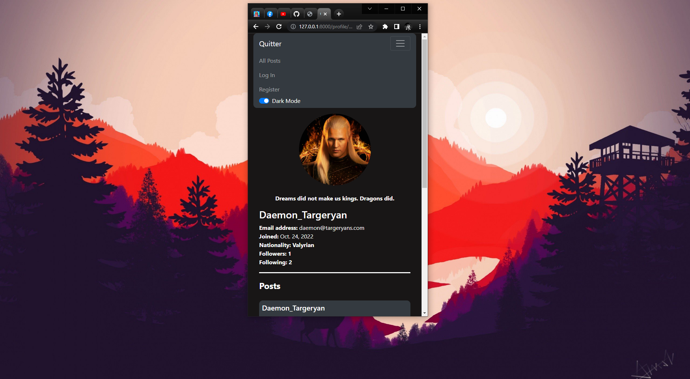

A full stack web developer! Welcome to my portfolio!
Hey, I'm glad you're here!
I'm a computer science undergraduate student studying
at Bangladesh University of Engineering and Technology.
I'm very interested in development, currently
efficient in web development. I'm quite confident in frontend
and backend altogether. Before starting my dev career, I did
some professional video editing and 3D modelling.
Skills
I love to learn new technologies everyday. Here are some
of the technologies and frameworks I know and have worked
with in the past.
Languages
C
C++
Python
JavaScript
HTML
CSS
Frontend
HTML
CSS
Vanilla JS
Bootstrap
SaaS
Tools
GitHub
VSCode
Backend
Django
Flask
Jinja
Databases
SQLite
PostgreSQL
My Past Projects
Deployed Web Applications
AjkeKiKorbo
AjkeKiKorbo is a day planner app which lets you plan your
days and complete your tasks easily. It also tracks your
progress and shows you how you've been doing. This was my
first deployed and production ready app.
>_Background
November, 22. I had my CS50W course's final project due. I
always wanted to make programs that would solve problems,
regardless the size of them.
So I had been using a diary as my to-do list for almost 2 years
and I faced some difficulties with it like forgetting to write down
the tasks and so on. There are many todo applications available online
but they seemed quite complex but I needed a simpler one. So, to come
up with a solution to this problem, I made this app which also served
as a final project to the CS50W course.
>_Functionality
'AjkeKiKorbo'(An English translation would be 'What to do today?')
is an app that lets you plan your day(and the next) and help you
achieve your goals by keeping track of the tasks that you
complete and the tasks that are yet to be completed.You can
generalize this as a 'todo' app. However, what makes this better
is that this app can track your progress and let you see
how you've been doing. There is a reminder feature as well,
where you can have as many reminders as you want and the
app will show them to you in various pages in a random order.
There are some other features as well but they are for you
to find out and hopefully more features will be available
in the future.
>_Gallery
Today's Plan
Here you can see your pending and completed tasks. You can
also see your yesterday's tasks if that ever comes in handy.
Cool Dark Theme
A dark theme since this is more prefered among programmers.
Progress Page
This interactive graph was made using Chart JS.
Interactive UI
I used Vanilla JS to build Interactive UIs like this. You can fill
up any form easily. Here the Background is disabled and the opacity
is lowered so the application looks more interactive.
User Registration
The application lets users have their own account obviously.
Error validation
Flawless client side and server side validation so that users intentionally
or unintentionally cannot raise an internal server error.
Custom 404 Template
This is a custom 404 error template that I made from scratch.
If you go to a link that doesn't exist, you'll be shown this text.
There were quite a lot of challenges and I learned a lot honestly from this
project. Making this application responsive was one hell of a job. Since this is
a todo app and it tracks your progress flawlessly, being accurate with timezones
was a hectic challenge for me to overcome. I took leverage of Python's Calender,
Datetime, pytz modules to come up with solutions so that anyone, from any timezone
can use this app.
This was my first time working with graph so it was a good challenge and a lot of fun
to be able to implement Chart JS properly.
I learned how to make custom 404 error pages. Since this was my first deployed app,
I learned so much on databases, deployment and so on. I had to make this app as efficient
as possible so users could read from and write to the database without any hassle. This
app also welcomes users upon registration via email so I learned to work with environment
variables and also 'gitignore' them to make things secure. So I would say my GitHub skills
got better as well.
Projects As A Novice
Quitter
Quitter is social media app that works somewhat like Twitter.
>_Background
This was a course project for CS50W and I had to make a social media app where
users could post and like other posts, each user could have a profile and
follow/unfollow other users and so on.
>_Functionality
This works pretty much like a simple social media app. You can log in and
make posts, like and comment on other's posts. You can have a profile of
your own where you have your photo, name and many other informations.
>_Gallery
Home Page
You can see all the posts in this page.
User Profile
Profile page with user's profile picture, name, email, followers and
following count, posts and so on.
Following Posts
Users can see the posts of the users that they follow.
White Theme
Interactive dark and white mode available for the app. All done with
vanilla JS.

responsive UI
Fully mobile responsive UI available.
Registration Page
Users can register and upload their profile picture as well.
Paginator
Using Djangp's paginator module and bootstrap to make cool pages for
posts.
This was a pretty hectic project for me as a novice. There were extensive
backend and frontend work. Javascript was used in so many parts of the
project(eg: liking, following/unfollowing, creating posts etc) to make the
website more user interactive.
I learned to work more efficiently with Django's ManytoManyFields, got to
do more vanilla JS which was a great learning opportunity. I learned how
to use Javascript to change themes of a website. Learned how to work with
media files and how users could upload media in a full stack web application.
Got to learn more on how to make websites as responsive as possible and the
list could go on.
Auctions
Auctions is an ecommerce app that lets you buy an sell things with many other cool features.
>_Background
This was a course project for CS50W, I had to make an auction app where users
could make a listing and others could bid on them. There were many other functionalities.
>_Functionality
Users can make a listing and other users can bid on that item, the maximum
bidder would win the item if the owner closed that bid. You can add items to
your watchlists. You can view details of each items where you can find many
other details about those items such as images, descriptions, current bidder
etc. There is a comment section for you see the validity and authenticity of
an item.
This was one of my first django projects so I had to figure out a lot of the
'backend stuff' in this project. I didn't really focus on the frontend for this
one, tho the website is completely responsive. I learned a lot about urls,
Django models, Jinja etc from this project since it was an early project.
Stock Market
This app lets you have a profile and buy and sell stock shares using realtime data via an API.
This is single page email app that lets you send and receive emails and so on and
everything was done using JavaScript in the frontend.
>_Background
This was a frontend based CS50W project. I had to create a simple email app
for this project.
>_Functionality
This is a one-page application. You can send emails, reply to emails,
archive/unarchive emails etc. You can see whether an email is read(kinda like
what Gmail does). You can change your views by clicking on different buttons.
>_Gallery
Inbox Page
The boldness determines whether an email is read.
Compose View
We can compose email and send from this page.
Detailed View
This is the detailed email view. From here we can reply to an email and
archive/unarchive it.
This was my first JavaScript-heavy project. There were so many things to implement
and it felt really overwhelming in the beginning honestly. But I started doing
one thing at a time and things finally started to be put in place. I learned
so much about JavaScript and user interfaces in this project. I learned more
about DOM, events, fetch calls, creating HTML dynamically with JavaScript and
so many other things. This was simply a very good project to learn JavaScript
and UI in general.
Interested in working with me?
I'm always open to opportunities to work on interesting projects!